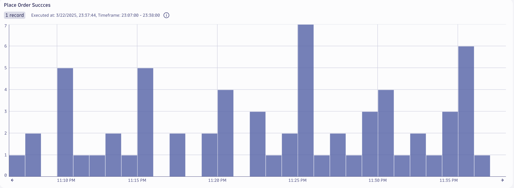
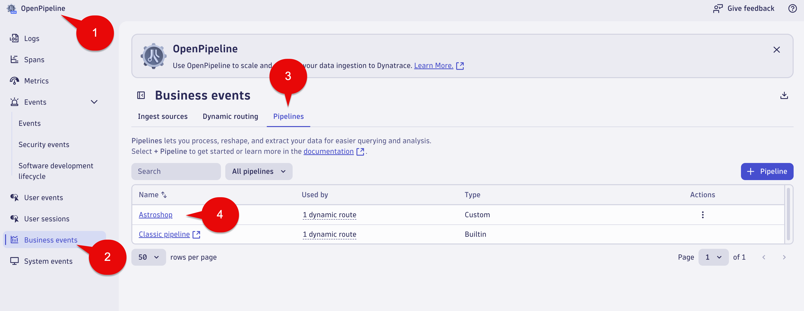
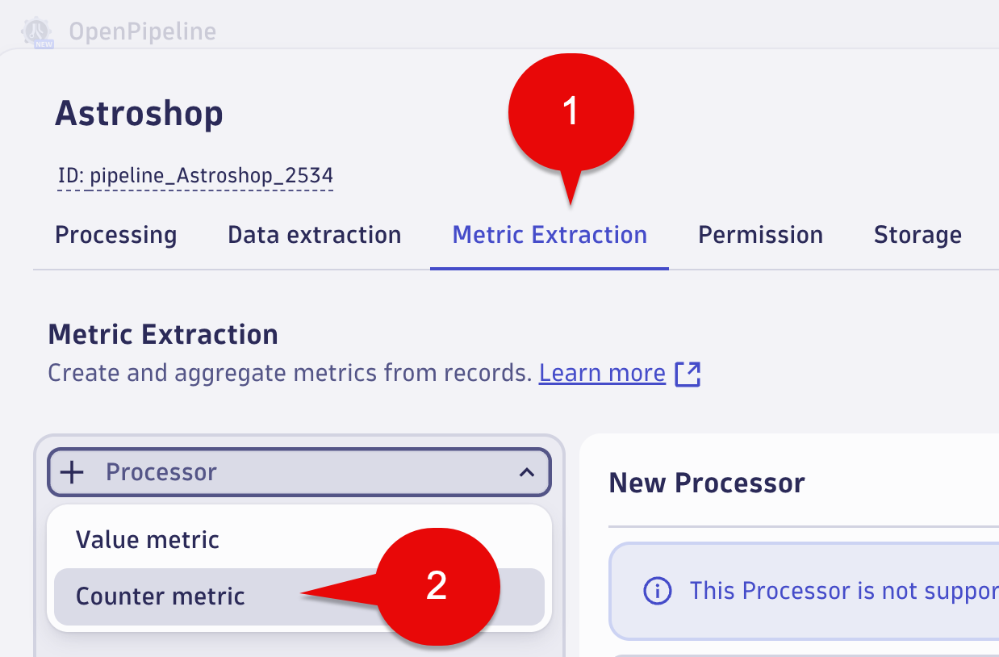
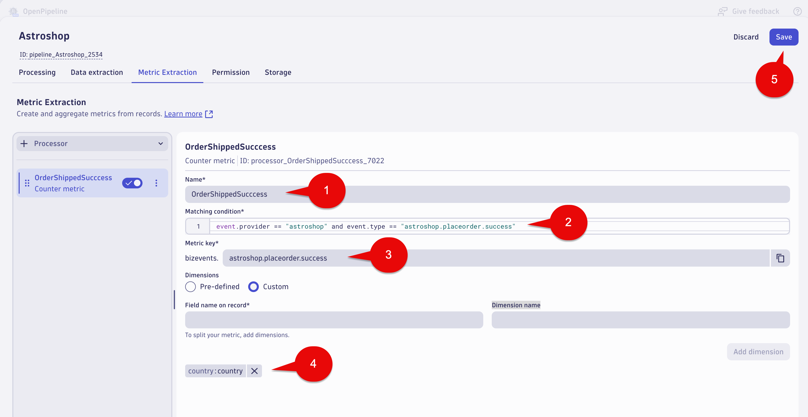
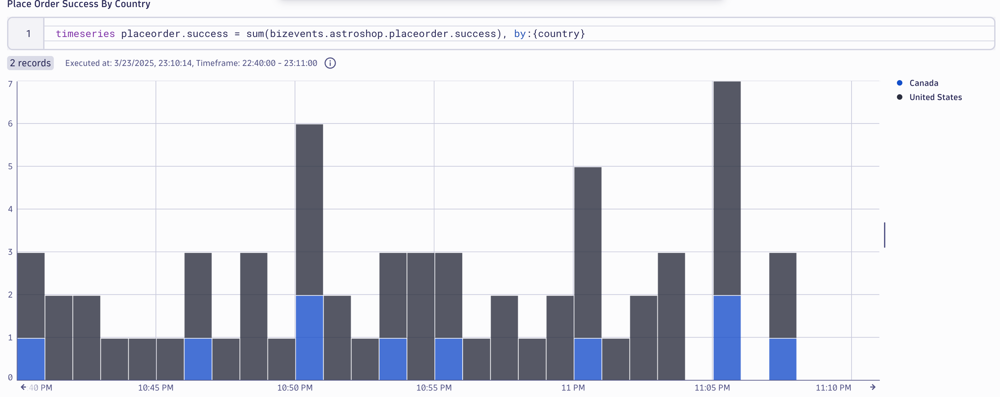

Business Events - Metric#
Business event metric extraction is a convenient way to create your own business metrics.
It enables you to:
- To use with Dashboards and Notebooks for real-time monitoring and historical data analysis
- Alerting, such as when a certain value surges or drops
This lab will utilize OpenPipeline to make a business metric from business events for the Place Order step of the Astroshop Order to Shipped business process.

Place Order Metric#
In this section of the lab we will create a counter metric for Place Order step. We also want to report by Country.
Business Metric - OpenPipeline - Place Order#
Launch the OpenPipeline app.
Select Business events in the OpenPipeline tree.
Select Pipelines tab.
Select the Astroshop Pipeline.

Business Metric - OpenPipeline Processing - Place Order#
Select the Metric Extraction tab.
Select the + Processor button (left side of the screen), then select Counter metric

Note:
Counter metric
Where you want to count the number `Place Order` occurrences.
Value metric
Where you want to report on `Revenue`. The revenue field captured in the `Place Order`
Business Event data values would be extracted and used as the metric value.
Fill out the fields with the following data:
Name:
OrderShippedSucccess
Matching condition:
event.provider == "astroshop" and event.type == "astroshop.placeorder.success"
Metric key:
astroshop.placeorder.success
Dimensions:
Select the Custom radio button.
For the Field name on record and Dimension name sections use:
country
Click the Add dimension button. This will add both fields.
Select the Save button at the top right of the screen.

Conclusion#
We have completed the Business Metric capture for Placer Order step of the Order to Shipped business process. The next section will validate the data.
Data Validation#
In this section of the lab we will validate the data for the Place Order business metric. We also want to see it broken out by country.
Query Business Metric in Dynatrace#
Using a Notebook execute the below DQL query which retrieves the business metric bizevents.astroshop.placeorder.success split by country. Note, you shoud see data within 3-5 minutes.
DQL:
timeseries placeorder.success = sum(bizevents.astroshop.placeorder.success), by:{country}
Result:

Conclusion#
We have completed data validation for the Place Order business metric.
Continue#
In the next section, we'll use the captured Business Events to create an Alert.